Page 7The Moon: Earth’s Partner
The Moon is Earth’s nearest neighbour. Its gravity is only about one-sixth as strong, so Ari can jump much higher.
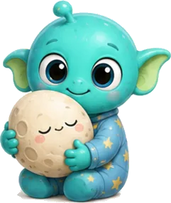
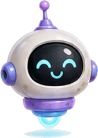
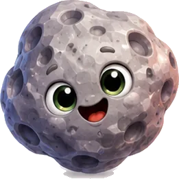
Tap a sparkling star on any page to meet a space friend and keep their sticker.
The Moon is Earth’s nearest neighbour. Its gravity is only about one-sixth as strong, so Ari can jump much higher.
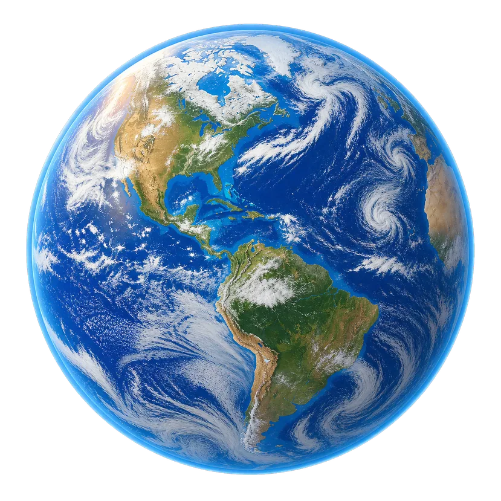
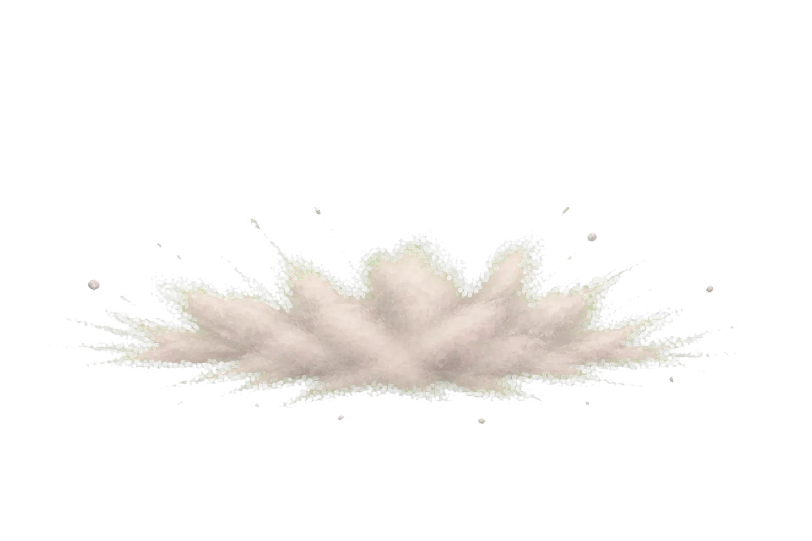
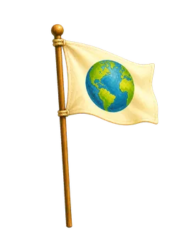
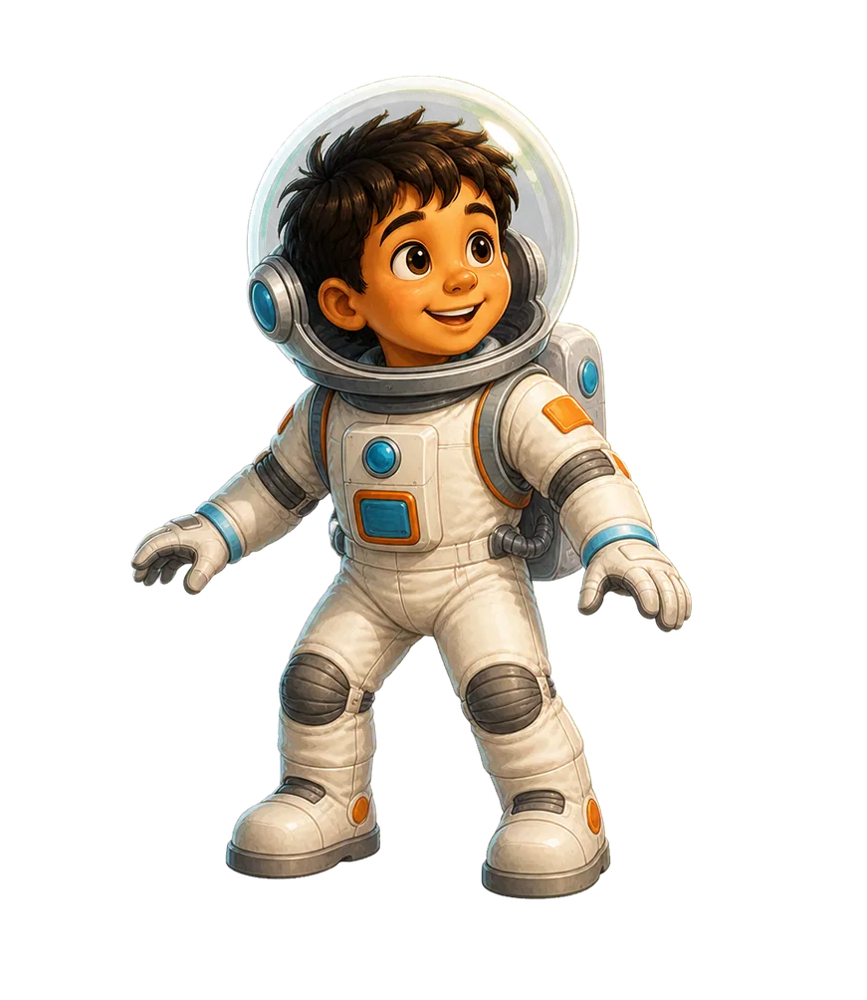
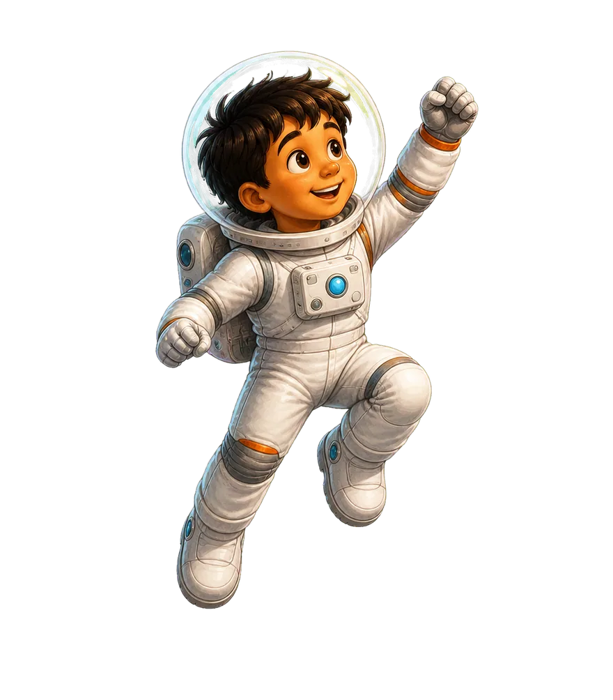
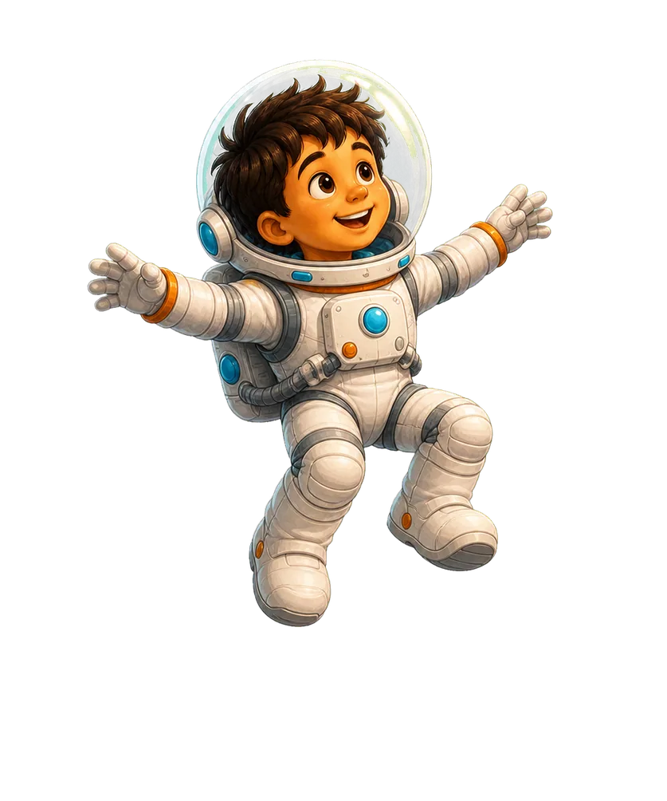
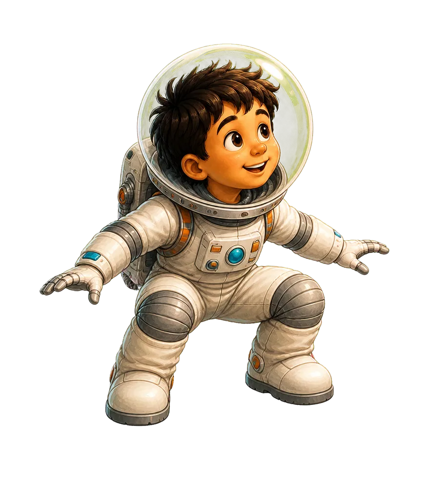
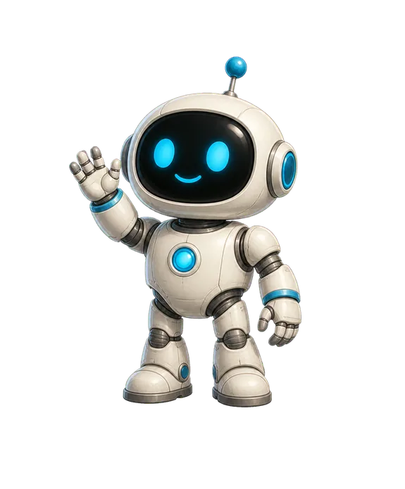
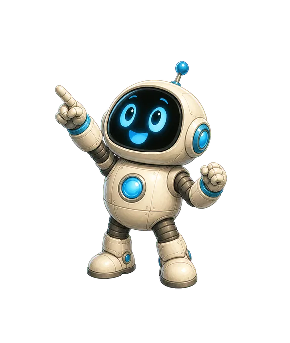
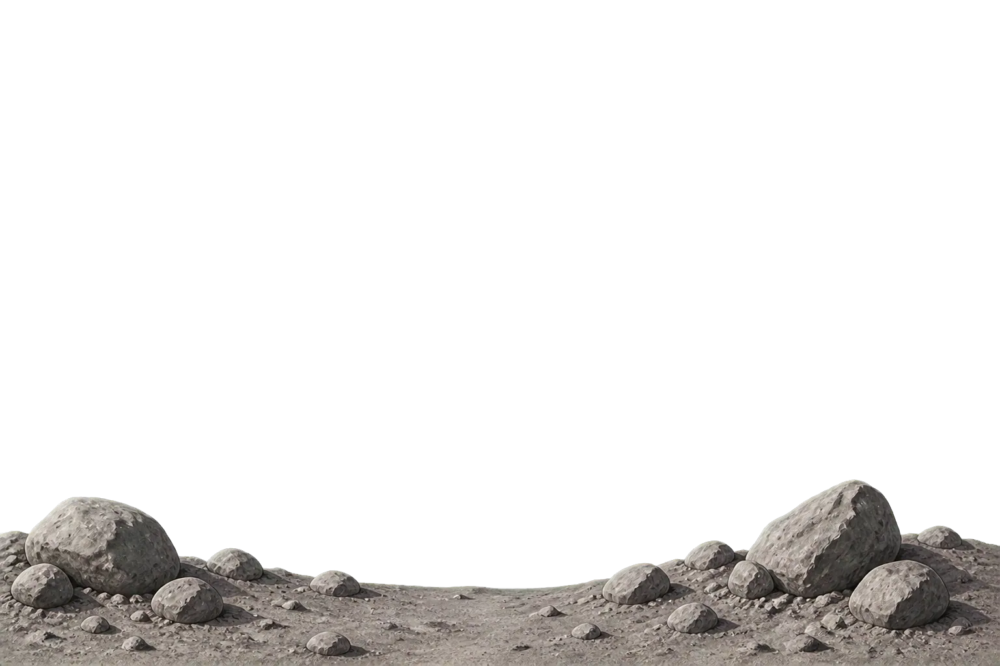
The Moon rotates once while it travels once around Earth. That is why nearly the same side keeps facing us.
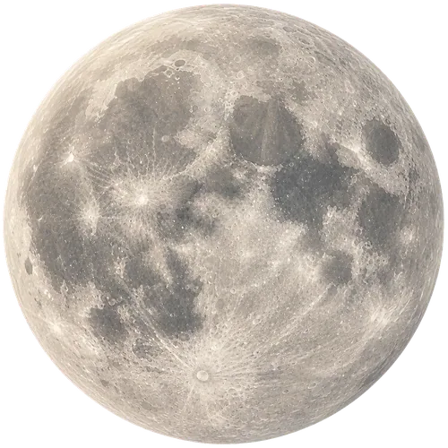
The gold marker keeps pointing at Earth
The near side has broad, dark plains called maria.